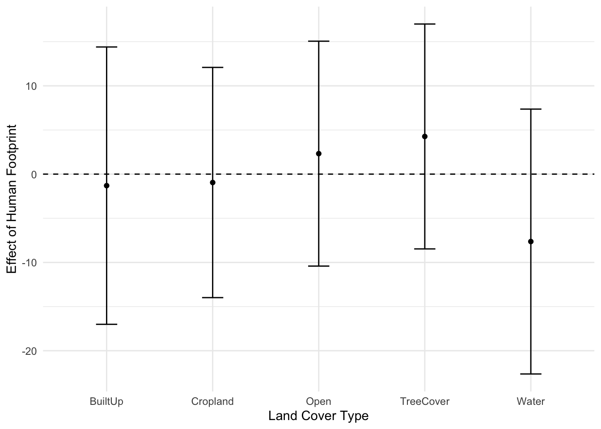
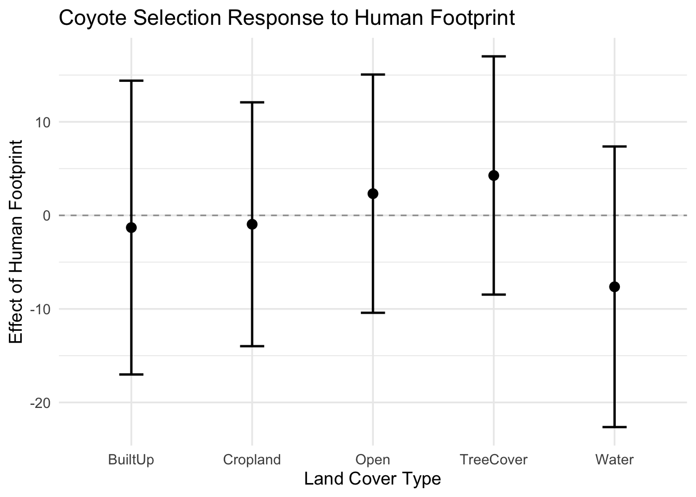
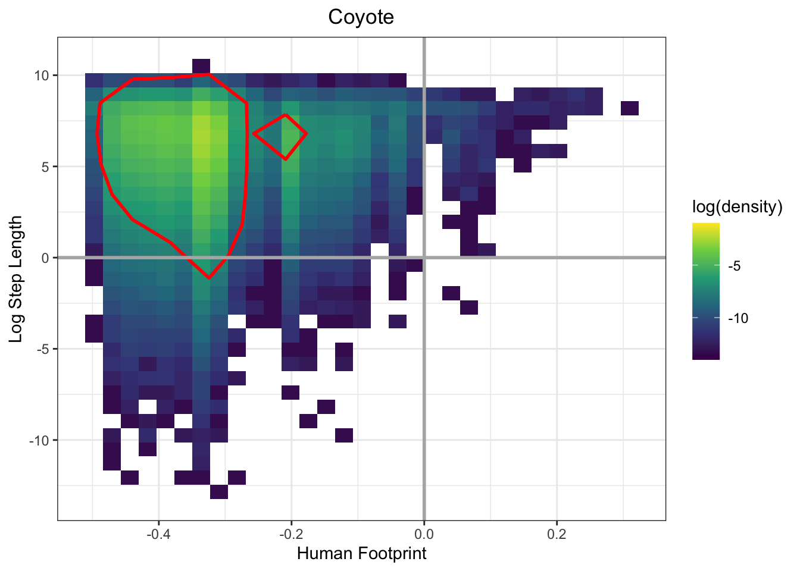
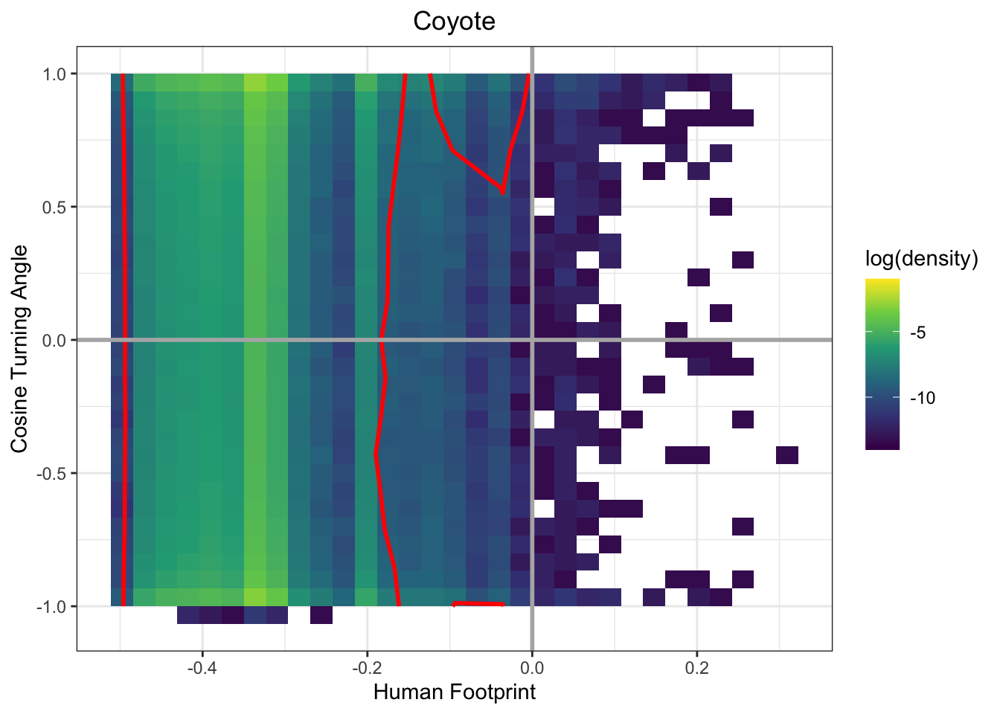
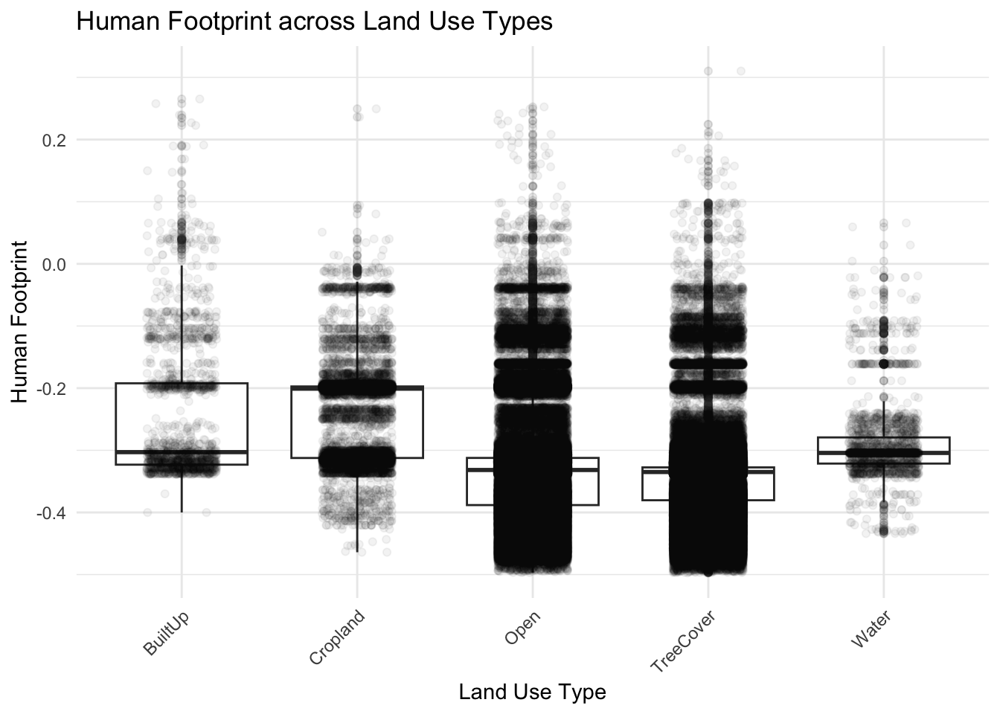
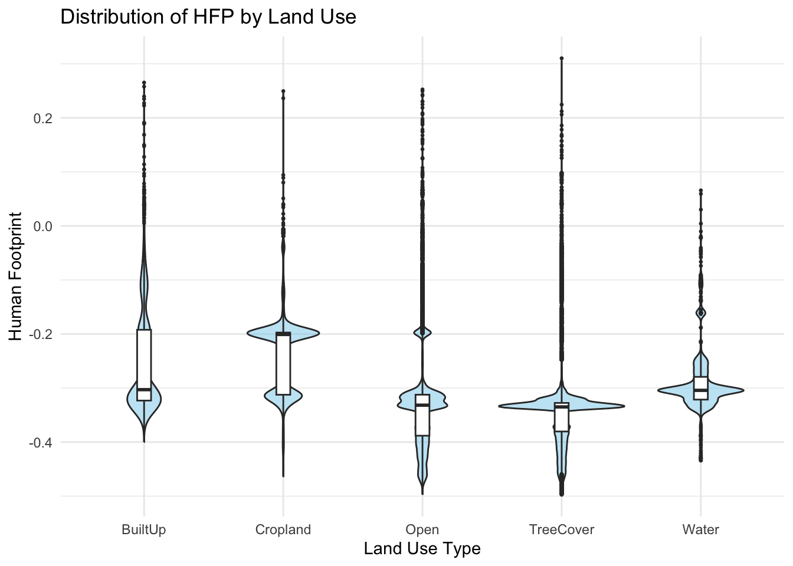
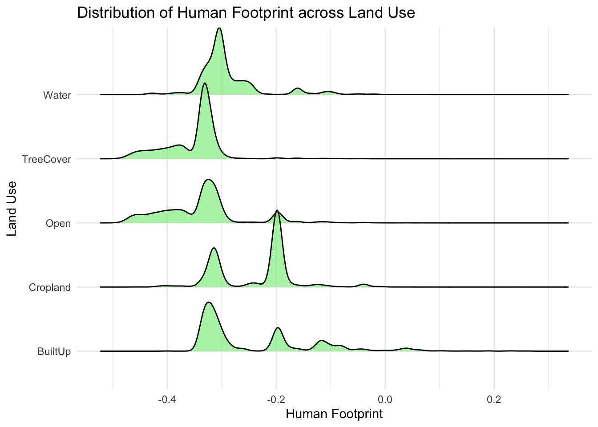
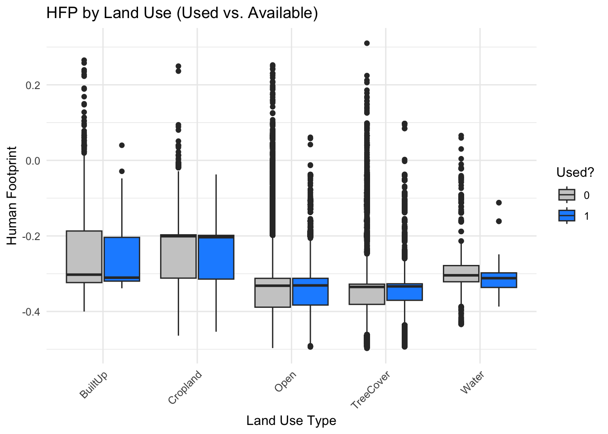

# Load necessary packages -----------------------------------------------------
pacman::p_load(
tidyverse,
glmmTMB,
DHARMa,
emmeans,
ggridges
)
# Settings for modeling ---------------------------------------------------
nt <- parallel::detectCores() - 2
options(scipen = 0)
options(digits = 7)
# Fit SSF: Coyote -------------------------------------------------------------
# Read SSF ready data
coyote_ssf_data <- read_delim("data/coyote_ssf_data.csv") |>
filter(n > 100) # select animals with more than 100 fixesRows: 668338 Columns: 22
── Column specification ────────────────────────────────────────────────────────
Delimiter: ","
chr (5): id, species, step_id_, land_use, land_use_grouped
dbl (14): burst_, x1_, x2_, y1_, y2_, ta_, dt_, cos_ta_, case_binary_, sl_,...
lgl (1): case_
dttm (2): t1_, t2_
ℹ Use `spec()` to retrieve the full column specification for this data.
ℹ Specify the column types or set `show_col_types = FALSE` to quiet this message.# Fit SSF with glmmTMB following Muff et al (first published 2019)
ssf_coyote <- glmmTMB(
case_binary_ ~ -1 +
land_use_grouped * (human_footprint + I(human_footprint^2)) +
log_sl_ +
(0 + land_use_grouped + human_footprint + I(human_footprint^2) + log_sl_|| id) +
(1 | step_id_),
family = poisson,
doFit = TRUE,
data = coyote_ssf_data,
map = list(theta = factor(c(1:8, NA))),
# Set the value of the standard deviation of the strata (the last ranef) to large constant value. See Muff et al (2020) JAE
start = list(theta = c(rep(0, times = 8), log(1e3))),
control = glmmTMBControl(parallel = nt)
)
saveRDS(ssf_coyote, file = "models/ssf_coyote_model.rds")
summary(ssf_coyote) Family: poisson ( log )
Formula:
case_binary_ ~ -1 + land_use_grouped * (human_footprint + I(human_footprint^2)) +
log_sl_ + (0 + land_use_grouped + human_footprint + I(human_footprint^2) +
log_sl_ || id) + (1 | step_id_)
Data: coyote_ssf_data
AIC BIC logLik deviance df.resid
1245038 1245312 -622495 1244990 666224
Random effects:
Conditional model:
Groups Name Variance Std.Dev. Corr
id land_use_groupedBuiltUp 3.396e-01 5.828e-01
land_use_groupedCropland 7.845e-02 2.801e-01 0.00
land_use_groupedOpen 2.220e-07 4.712e-04 0.00 0.00
land_use_groupedTreeCover 6.024e-02 2.454e-01 0.00 0.00 0.00
land_use_groupedWater 1.169e-10 1.081e-05 0.00 0.00 0.00 0.00
human_footprint 5.988e+02 2.447e+01 0.00 0.00 0.00 0.00
I(human_footprint^2) 1.315e+03 3.626e+01 0.00 0.00 0.00 0.00
log_sl_ 1.607e-04 1.268e-02 0.00 0.00 0.00 0.00
step_id_ (Intercept) 1.000e+06 1.000e+03
0.00
0.00 0.00
0.00 0.00 0.00
Number of obs: 666248, groups: id, 29; step_id_, 60568
Conditional model:
Estimate Std. Error z value
land_use_groupedBuiltUp -7.353270 4.142601 -1.775
land_use_groupedCropland -6.293370 4.090481 -1.538
land_use_groupedOpen -6.196055 4.075008 -1.520
land_use_groupedTreeCover -5.755518 4.075787 -1.412
land_use_groupedWater -6.622267 4.248306 -1.559
human_footprint -25.629306 8.734709 -2.934
I(human_footprint^2) -35.326567 18.149252 -1.946
log_sl_ 0.008330 0.003491 2.386
land_use_groupedCropland:human_footprint 2.073454 7.764338 0.267
land_use_groupedOpen:human_footprint -0.638405 7.256289 -0.088
land_use_groupedTreeCover:human_footprint 1.562051 7.257883 0.215
land_use_groupedWater:human_footprint 13.530067 11.408850 1.186
land_use_groupedCropland:I(human_footprint^2) 2.496899 17.647206 0.142
land_use_groupedOpen:I(human_footprint^2) -6.193410 16.702338 -0.371
land_use_groupedTreeCover:I(human_footprint^2) -5.820528 16.698846 -0.349
land_use_groupedWater:I(human_footprint^2) 28.841967 23.882297 1.208
Pr(>|z|)
land_use_groupedBuiltUp 0.07589 .
land_use_groupedCropland 0.12392
land_use_groupedOpen 0.12839
land_use_groupedTreeCover 0.15791
land_use_groupedWater 0.11904
human_footprint 0.00334 **
I(human_footprint^2) 0.05160 .
log_sl_ 0.01702 *
land_use_groupedCropland:human_footprint 0.78943
land_use_groupedOpen:human_footprint 0.92989
land_use_groupedTreeCover:human_footprint 0.82959
land_use_groupedWater:human_footprint 0.23565
land_use_groupedCropland:I(human_footprint^2) 0.88748
land_use_groupedOpen:I(human_footprint^2) 0.71078
land_use_groupedTreeCover:I(human_footprint^2) 0.72742
land_use_groupedWater:I(human_footprint^2) 0.22717
---
Signif. codes: 0 '***' 0.001 '**' 0.01 '*' 0.05 '.' 0.1 ' ' 1#coyote_ssf_data1 <- coyote_ssf_data |>
# group_by(step_id_) |>
# mutate(samp = sample(n())) |>
# filter(samp <= 5, case_binary_ == 0) |> mutate(id = NA)
#coy_pred <- predict(ssf_coyote, coyote_ssf_data1, re.form = NA, se.fit = TRUE)
#coyote_ssf_data1$fit <- coy_pred$fit
#coyote_ssf_data1$se <- coy_pred$se
#coyote_ssf_data1 <- coyote_ssf_data1 |> ungroup()
# Marginal effects of HFP by land cover
trends_coyote <- emtrends(ssf_coyote, ~ land_use_grouped, var = "human_footprint") |>
summary(infer = c(TRUE, TRUE))
emtrends(ssf_coyote, specs = ~ land_use_grouped, var = "human_footprint",
at = list(human_footprint = -0.1)) |>
summary(infer = c(TRUE, TRUE)) land_use_grouped human_footprint.trend SE df asymp.LCL asymp.UCL z.ratio
BuiltUp -18.6 6.38 Inf -31.1 -6.09 -2.915
Cropland -17.0 5.26 Inf -27.3 -6.72 -3.238
Open -18.0 4.94 Inf -27.7 -8.31 -3.641
TreeCover -15.9 4.95 Inf -25.6 -6.18 -3.209
Water -10.8 7.48 Inf -25.5 3.86 -1.444
p.value
0.0036
0.0012
0.0003
0.0013
0.1487
Confidence level used: 0.95 ggplot(trends_coyote, aes(x = land_use_grouped, y = human_footprint.trend)) +
geom_point() +
geom_errorbar(aes(ymin = asymp.LCL, ymax = asymp.UCL), width = 0.2) +
geom_hline(yintercept = 0, linetype = "dashed") +
ylab("Effect of Human Footprint") +
xlab("Land Cover Type") +
theme_minimal()
# Create prediction dataset: only available steps, 5 per stratum
#coyote_pred_data <- coyote_ssf_data |>
# group_by(step_id_) |>
# mutate(samp = sample(n())) |>
# filter(case_binary_ == 0, samp <= 5) |>
# ungroup()
# Predict fixed effect response (log-RSS), store SEs too
#coyote_pred <- predict(ssf_coyote, newdata = coyote_pred_data, re.form = NA, se.fit = TRUE)
#coyote_pred_data <- coyote_pred_data |>
# mutate(fit = coyote_pred$fit, se = coyote_pred$se)
ggplot(trends_coyote, aes(x = land_use_grouped, y = human_footprint.trend)) +
geom_hline(yintercept = 0, linetype = "dashed", color = "grey60") +
geom_point(size = 3, color = "black") +
geom_errorbar(aes(ymin = asymp.LCL, ymax = asymp.UCL), width = 0.2, linewidth = 0.8) +
labs(
title = "Coyote Selection Response to Human Footprint",
x = "Land Cover Type",
y = "Effect of Human Footprint"
) +
theme_minimal(base_size = 13)
# Bivariate density hex plot (continuous y-variable vs human footprint)
hex_plot_fun <- function(data, yvar, ylab, title_) {
ggplot(data, aes(x = human_footprint, y = .data[[yvar]])) +
geom_bin2d(aes(fill = after_stat(log(density)))) +
scale_fill_viridis_c(limits = c(-14, -1), option = "D") +
stat_density_2d(
aes(x = human_footprint, y = .data[[yvar]]),
colour = "red", breaks = c(0.05), n = 15, size = 1
) +
geom_vline(xintercept = 0, colour = "gray70", size = 1) +
geom_hline(yintercept = 0, colour = "gray70", size = 1) +
labs(
x = "Human Footprint",
y = ylab,
title = title_
) +
theme_bw() +
theme(plot.title = element_text(hjust = 0.5))
}
hex_plot_fun(coyote_ssf_data, yvar = "log_sl_", ylab = "Log Step Length", title_ = "Coyote")Warning: Using `size` aesthetic for lines was deprecated in ggplot2 3.4.0.
ℹ Please use `linewidth` instead.
hex_plot_fun(coyote_ssf_data, yvar = "cos_ta_", ylab = "Cosine Turning Angle", title_ = "Coyote")
ggplot(coyote_ssf_data, aes(x = land_use_grouped, y = human_footprint)) +
geom_boxplot(outlier.alpha = 0.1) +
geom_jitter(width = 0.2, alpha = 0.05) +
theme_minimal() +
xlab("Land Use Type") +
ylab("Human Footprint") +
ggtitle("Human Footprint across Land Use Types") +
theme(axis.text.x = element_text(angle = 45, hjust = 1))
ggplot(coyote_ssf_data, aes(x = land_use_grouped, y = human_footprint)) +
geom_violin(fill = "skyblue", alpha = 0.5) +
geom_boxplot(width = 0.1, outlier.size = 0.5) +
theme_minimal() +
xlab("Land Use Type") +
ylab("Human Footprint") +
ggtitle("Distribution of HFP by Land Use")
ggplot(coyote_ssf_data, aes(x = human_footprint, y = land_use_grouped)) +
geom_density_ridges(scale = 1.2, fill = "lightgreen", alpha = 0.7) +
theme_minimal() +
xlab("Human Footprint") +
ylab("Land Use") +
ggtitle("Distribution of Human Footprint across Land Use")Picking joint bandwidth of 0.0085
ggplot(coyote_ssf_data, aes(x = land_use_grouped, y = human_footprint, fill = factor(case_binary_))) +
geom_boxplot(position = position_dodge(0.8)) +
scale_fill_manual(values = c("0" = "grey80", "1" = "dodgerblue"), name = "Used?") +
theme_minimal() +
xlab("Land Use Type") +
ylab("Human Footprint") +
ggtitle("HFP by Land Use (Used vs. Available)") +
theme(axis.text.x = element_text(angle = 45, hjust = 1))
# Fit SSF: Bobcat -------------------------------------------------------------
# Read SSF ready data
bobcat_ssf_data <- read_delim("data/bobcat_ssf_data.csv") |>
filter(n > 100) # select animals with more than 100 fixesRows: 119009 Columns: 22
── Column specification ────────────────────────────────────────────────────────
Delimiter: ","
chr (5): id, species, step_id_, land_use, land_use_grouped
dbl (14): burst_, x1_, x2_, y1_, y2_, ta_, dt_, cos_ta_, case_binary_, sl_,...
lgl (1): case_
dttm (2): t1_, t2_
ℹ Use `spec()` to retrieve the full column specification for this data.
ℹ Specify the column types or set `show_col_types = FALSE` to quiet this message.table(bobcat_ssf_data$land_use_grouped)
BuiltUp Cropland Open TreeCover Water
79 311 24277 90059 158 # Dropping land use groups with too few used steps
# (virtually no variation in case status)
bobcat_ssf_filtered <- bobcat_ssf_data |>
filter(!(land_use_grouped %in% c("BuiltUp", "Snow and ice", "Water", "Cropland")))
ssf_bobcat_struc <- glmmTMB(
case_binary_ ~ -1 +
land_use_grouped * human_footprint +
offset(log_sl_) +
(1 | step_id_) +
(0 + land_use_grouped + human_footprint || id),
family = poisson,
data = bobcat_ssf_filtered,
control = glmmTMBControl(parallel = nt),
doFit = FALSE
)
# Check theta values (to build map/start correctly)
length(ssf_bobcat_struc$parameters$theta)[1] 4ssf_bobcat_struc$parameters$theta[1] <- log(1e3)
ssf_bobcat_struc$mapArg <- list(theta = factor(c(NA, 1:3)))
ssf_bobcat <- glmmTMB:::fitTMB(ssf_bobcat_struc)
summary(ssf_bobcat) Family: poisson ( log )
Formula:
case_binary_ ~ -1 + land_use_grouped * human_footprint + offset(log_sl_) +
(1 | step_id_) + (0 + land_use_grouped + human_footprint || id)
Data: bobcat_ssf_filtered
AIC BIC logLik deviance df.resid
225585.7 225653.2 -112785.8 225571.7 114329
Random effects:
Conditional model:
Groups Name Variance Std.Dev. Corr
step_id_ (Intercept) 1.000e+06 1.000e+03
id land_use_groupedOpen 2.259e-01 4.753e-01
land_use_groupedTreeCover 1.324e-04 1.151e-02 0.00
human_footprint 1.293e+01 3.596e+00 0.00 0.00
Number of obs: 114336, groups: step_id_, 10444; id, 26
Conditional model:
Estimate Std. Error z value Pr(>|z|)
land_use_groupedOpen -28.0482 2.5789 -10.876 <2e-16
land_use_groupedTreeCover -27.1349 2.5719 -10.550 <2e-16
human_footprint -1.1732 0.8797 -1.334 0.182
land_use_groupedTreeCover:human_footprint 0.8292 0.5057 1.640 0.101
land_use_groupedOpen ***
land_use_groupedTreeCover ***
human_footprint
land_use_groupedTreeCover:human_footprint
---
Signif. codes: 0 '***' 0.001 '**' 0.01 '*' 0.05 '.' 0.1 ' ' 1confint(ssf_bobcat) 2.5 % 97.5 %
land_use_groupedOpen -3.310276e+01 -2.299356e+01
land_use_groupedTreeCover -3.217572e+01 -2.209400e+01
human_footprint -2.897345e+00 5.509621e-01
land_use_groupedTreeCover:human_footprint -1.619004e-01 1.820278e+00
Std.Dev.land_use_groupedOpen|id 3.279651e-01 6.888733e-01
Std.Dev.land_use_groupedTreeCover|id 1.441415e-111 9.185685e+106
Std.Dev.human_footprint|id 2.594366e+00 4.983357e+00
Estimate
land_use_groupedOpen -28.04815942
land_use_groupedTreeCover -27.13485920
human_footprint -1.17319145
land_use_groupedTreeCover:human_footprint 0.82918859
Std.Dev.land_use_groupedOpen|id 0.47531719
Std.Dev.land_use_groupedTreeCover|id 0.01150669
Std.Dev.human_footprint|id 3.59564332# Marginal trends for bobcats
trends_bobcat <- emtrends(ssf_bobcat, ~ land_use_grouped, var = "human_footprint") |>
summary(infer = c(TRUE, TRUE))